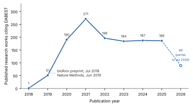
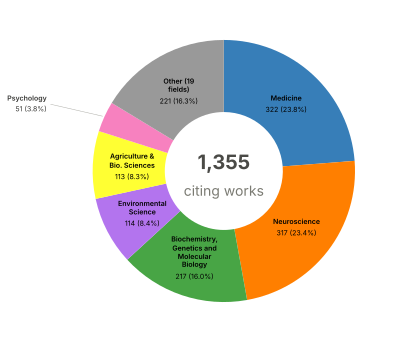
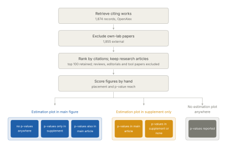
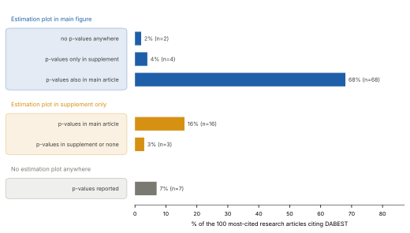

Tracking DABEST adoption
Seven years after DABEST was introduced in 2019, we looked back at its adoption across the literature.
Written by: Nicole Lee
Knowing whether a result is statistically significant is not the same as understanding what the data shows. In 1978, Kenneth Rothman argued in the New England Journal of Medicine [1] that confidence intervals should replace significance tests. He spent years trying to make that happen. As an editor at the American Journal of Public Health, he required authors to report confidence intervals instead of p-values, reducing sole reliance on p-values from 63% to 5% [2]. When he founded Epidemiology in 1990, he went further and banned p-values altogether. On paper, it looked like a success. But when Fidler and colleagues [2] examined those papers, they found that while authors had dutifully reported confidence intervals, very few actually used them to interpret their results. The policy was eventually abandoned.
That history was very much on our minds when we first published Moving beyond P values: data analysis with estimation graphics [3] in Nature Methods, alongside DABEST [4], the software that generates those figures. We wanted to make it easier for people to think about their data by giving them a practical way to visualize estimation statistics.
Our paper also became part of a broader conversation about how estimation statistics should be reported. Just six weeks after our paper was published, eNeuro launched an initiative encouraging authors to adopt estimation statistics as something to layer on top of existing practice rather than replace it [5], alongside a perspective by Calin-Jageman and Cumming [6] explaining the rationale. In early 2020, Editor-in-Chief Christophe Bernard asked Reviewing Editors [7] to identify papers that could benefit from converting to estimation statistics, and 100 were flagged. Across the journal, 52 papers published that year included estimation statistics. The initiative clearly succeeded in increasing the use of estimation statistics, although Bernard noted that in some cases p-values may no longer be necessary.
Seven years after we released DABEST, we wanted to know if anything had changed. What did the people who picked it up actually do with it? We pulled every work citing the 2019 paper from OpenAlex [8]. After removing papers from our own lab, preprints and duplicate records, we were left with 1,266 citations from 2018 through 2025, with another 89 so far in 2026 (Figure 1). DABEST has now been cited across 660 journals, 25 research fields, and ~638 institutions.

Figure 1. Works citing DABEST per year excluding our lab’s work, preprints, and duplicate records.
The two biggest fields are medicine and neuroscience, with 322 and 317 citing papers respectively, followed by biochemistry and molecular biology (217), environmental science (114) and agriculture (113) (Figure 2). Psychology, engineering, computer science and the social sciences all appear further down the list.

Figure 2. The field breakdown of the 1,355 works citing DABEST, after removing our own lab’s papers, preprints and duplicate records.
That is a much wider user base than we could ever have surveyed directly. To understand how people were actually using DABEST, we turned to the literature.

Figure 3. How the 100 scored papers were selected and sorted. The counts in the top two boxes come from the earlier OpenAlex pull, before preprints and duplicates were removed. The six categories at the bottom were built to capture how each paper used DABEST, by recording whether the estimation plot reached a main figure or stayed in the supplement, and how far the p-values travelled alongside it.
We read the 100 most-cited research papers that cited our 2019 paper, excluding reviews, editorials, tutorials and software papers. For each paper, we recorded two things: where the estimation plot appeared and where p-values were reported (Figure 3). Estimation plots reached the main figures in 74 papers, appeared only in the supplement in 19, and were absent in 7. Nearly all 100 of them reported p-values as well. The single most common arrangement, covering 68 of the 100 papers, was an estimation plot in a main figure with p-values reported in the main text right alongside it. Only two papers combined a main-figure estimation plot with no p-values anywhere at all (Figure 4).

Figure 4. Where the estimation plot and the p-values landed across the 100 most-cited research articles. The three colored groups are the categories referred to in Figure 3.
Today, estimation plots have clearly found a place in the literature, presenting effect sizes alongside the raw data, making both the magnitude of an effect and the underlying observation immediately visible. Most authors still reported p-values alongside them, while only a handful (2%) relied on estimation statistics alone (Figure 4). We cannot say from this data whether statistical thinking has changed more broadly, only that for many researchers the two approaches now coexist.
References
[1]: Rothman, Kenneth J. “A Show of Confidence.” The New England Journal of Medicine, vol. 299, no. 24, 1978, pp. 1362–63.
[2]: Fidler, Fiona, et al. “Editors Can Lead Researchers to Confidence Intervals, but Can’t Make Them Think: Statistical Reform Lessons from Medicine.” Psychological Science, vol. 15, no. 2, 2004, pp. 119–26.
[3]: Ho, Joses, et al. “Moving beyond P Values: Data Analysis with Estimation Graphics.” Nature Methods, vol. 16, no. 7, 2019, pp. 565–66.
[4]: ACCLAB. DABEST-Python: Data Analysis with Bootstrapped ESTimation. GitHub. Accessed 3 Aug. 2026.
[5]: Bernard, Christophe. “Changing the Way We Report, Interpret, and Discuss Our Results to Rebuild Trust in Our Research.” eNeuro, vol. 6, no. 4, 2019, article ENEURO.0259-19.2019.
[6]: Calin-Jageman, Robert J., and Geoff Cumming. “Estimation for Better Inference in Neuroscience.” eNeuro, vol. 6, no. 4, 2019, article ENEURO.0205-19.2019.
[7]: Bernard, Christophe. “Estimation Statistics, One Year Later.” eNeuro, vol. 8, no. 2, 2021, article ENEURO.0091-21.2021.
[8]: “Moving beyond P Values: Data Analysis with Estimation Graphics.” OpenAlex, OurResearch. Accessed 3 Aug. 2026.